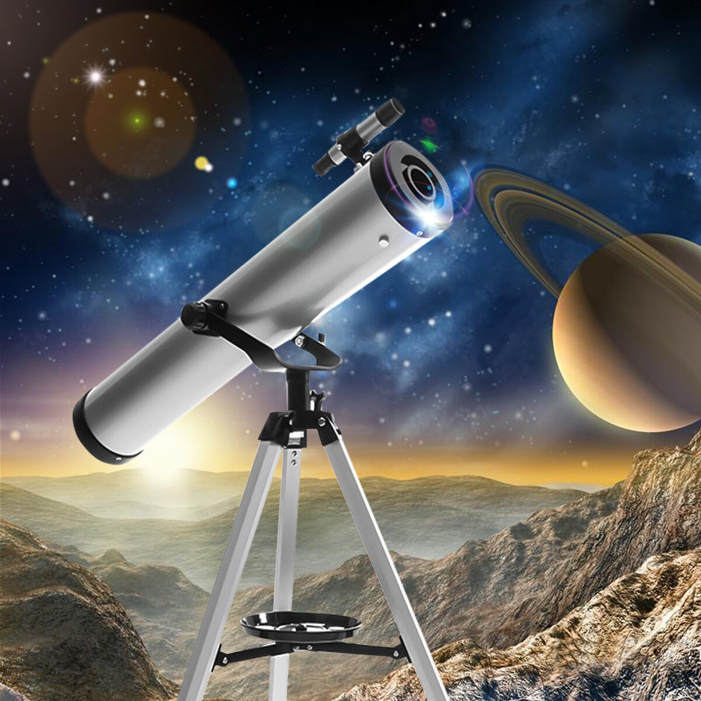

<!DOCTYPE HTML>
<!-- ПОдключение кодировки -->
<meta charset="utf-8">
<!-- Подключение файла стилей CSS -->
<link href="../../../styles.css" rel="stylesheet">
<!-- Строка, которая будет отображаться в заголовке HTML страницы -->
<title>Приборы/title>


    <body>
        <header>
            <div class=caption>
                <span> Приборы </span>
            </div>
            <div class="buttonback">
                <a href="../general_device.html">Назад </a>
            </div>
            <div class="buttonhome">
                <a href="../../../index.html"> Домой </a>
            </div>
        </header>
    </body>


    <div class="single-academic">
        <div class="single-academic-left">
            

            <div class="single-academic-bottom">
                <span class="single-academic-bottom-title">
                Телескоп
            </span>
                <span class="single-academic-bottom-subtitle">
                <!-- 384 – 322 гг. до н. э. -->
            </span>
            </div>
        </div>
        <div class="single-academic-right">
            <div class="single-academic-text">
                <span class="single-academic-text-title">
                <!-- Биография -->
            </span>

                <span>
                &nbsp;  Телескоп – это прибор, с помощью которого можно наблюдать отдалённые объекты путём сбора электромагнитного излучения.
            </span>
                <span>
                &nbsp;  Точно неизвестно кто же является истинным создателем телескопа.
            </span>
                <span>
               &nbsp;	Первым, попытавшимся запатентовать телескоп как свое изобретение, был производитель очков Х. Липперсгей. В 1608 г. он стал претендовать на устройство, которое могло увеличивать объекты в три раза. 
            </span>
                <span>
                &nbsp;  В 1609 г. Г. Галилей, узнав об изобретении Липперсгея, решил создать нечто подобное. Он разработал устройство, способное увеличивать предметы в 20 раз и предоставил его на суд Венецианского Сената. Сенат, оценив изобретение, назначил его лектором в падуанском университете. Галилео был первым человеком, направившим телескоп в небо. Он сумел разглядеть кратеры на луне и млечный путь. Ему же принадлежат открытия колец Сатурна, пятен на Солнце и 4 спутников Юпитера.
            </span>
                <span>
                &nbsp;  Ученые из других стран Европы продолжали улучшать телескоп. Так И. Кеплер сконструировал телескоп, способный отражать изображение вверх ногами благодаря двум выпуклым линзам. И. Ньютон в свою очередь отметил, что линзы стоит заменить зеркалами и в 1668 г. построил зеркальный телескоп.
            </span>
                <span>
                &nbsp;  Самый большой телескоп был открыт в 1897 г. в Йоркской обсерватории. В 1917 г. в обсерватории Маунт-Уилсон открылся 100-дюймовый отражающий телескоп.
            </span>
                <span>
                &nbsp;  Одним из самых знаменитых телескопов является Хаббл, запущенный в космос в 1990 г. В первые недели его работы был обнаружен дефект зеркала, который исправили в 1993 г. 
            </span>
                <span>
                &nbsp;  Не менее знаменит и телескоп Кеплера. Именно он обнаружил более 4000 потенциальных планет с момента запуска в 2009 г. Сперва телескоп был сосредоточен на созвездии Сигнуса, но в 2013 г. он потерял ориентацию в пространстве.
            </span>
                <span>
                &nbsp;  На данный момент самым крупным оптическим телескопом является Большой Канарский телескоп, построенный в 2007 г. Он расположен на потухшем вулкане Роке-де-лос-Мучачос в Испании. Диаметр основного зеркала составляет 10,4 метра и состоит из 36 гексагональных сегментов.
            </span>
            </div>